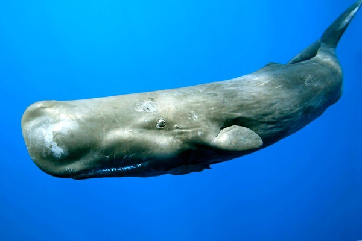
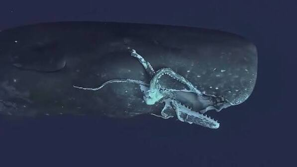

O cachalote é o maior cetáceo dentado e o maior predador com dentes. Os machos maduros têm em média 16 metros de comprimento, mas alguns podem atingir 20,7 metros, com a cabeça representando até um terço do comprimento do animal. Mergulhando a 2 250 metros, é o terceiro mamífero mergulhador mais profundo
Os cachalotes geralmente mergulham entre 300 a 800 metros, e às vezes 1 a 2 quilômetros, em busca de comida. Esses mergulhos podem durar mais de uma hora. Eles se alimentam de várias espécies, como a lula-colossal.
A lula-colossal é provavelmente a maior espécie de lula existente. É considerada o maior invertebrado em termos de massa do planeta de que se tem conhecimento, podendo ultrapassar os 15 metros de comprimento. Pouco se sabe sobre a vida desta criatura. É um predador, e no mar profundo, se utiliza de bioluminescência para encontrar a presa.

